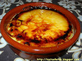
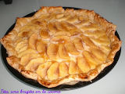

Tiramisú

En un bol se prepara la crema para el tiramisú: se mezcla el queso mascarpone con las yemas de huevo y el azúcar. Aparte, se baten las claras de huevo a punto de nieve. Finalmente, se incorporan las claras al bol del mascarpone. Se bate con cuidado, con las varillas, realizando movimientos envolventes, para no perder el aire de las claras montadas, (como haciendo una mousse). En una bandeja honda, montamos el postre, para ello, vamos colocando capas de bizcochos duros (soletilla) y los mojamos con café. Sobre una capa de bizcochos mojados en café, ponemos una capa de crema de mascarpone, después otra de bizcochos, otra de crema... etc. Sube los niveles que quieras, hasta terminar con una capa de crema. Tamiza sobre la última capa un poco de chocolate amargo en polvo. El tiramisú es un postre que debe estar en la nevera unas horas.
Tarta de chocolate

Ponemos a cocer la leche, con la ramita de canela, el azúcar y la piel de limón. Lavamos el arroz con abundante agua fría para quitarle el almidón. Cuando la leche cueza, añadimos el arroz y cocemos a fuego medio / bajo casi una hora, hasta que el arroz esté blando y la leche haya espesado lo suficiente (aquí se puede controlar por gustos, arroz con leche más espeso o más líquido), retiramos la corteza de limón y la canela en rama y servimos en cuencos, dejamos enfriar y espolvoreados por encima con canela en polvo.
Crema catalana
Poner a fuego suave en una cazuela 2 tazas de leche. Batir en un bol las cuatro yemas de huevo, a los que se añaden 3 cucharadas de azúcar (reservando dos) y una cucharada de maizena. Remover con las barillas hasta conseguir una crema sin grumos. Ésta mezcla se añade poco a poco a la leche, y subimos el fuego para hervir, durante 5 minutos sin dejar de mover. La crema catalana se sirve en boles o platos individuales, a los cuales se les echa azúcar por encima y se quema para crear una costra de caramelo. Se sirve caliente.
Dulce de leche

Colocar todos los ingredientes en un recipiente grande, preferentemente de cobre o aluminio, a fuego fuerte, durante unas horas, hasta que tome color y comience a hervir. Tener especial cuidado al romper el primer hervor, revolver y evitar que se derrame. Dejar hervir espesar, bajar el fuego al mínimo revolviendo cada tanto con una cuchara de madera. Cuando al sacar un poquito en un plato, y dividirlo por la mitad con una cuchara, no se unen las partes, está hecho. Al sacarlo del fuego, continuar revolviendo durante un rato hasta que pierda un poco de temperatura pues de lo contrario, se puede cortar. Al retirarlo del fuego, y mientras se revuelve, se puede apoyar el recipiente sobre agua fría para ayudar a entibiar más rápido
Tarta de manzana
Sobre una bandeja de horno se coloca un papel para hornear (o se unta la bandeja del horno con mantequilla), colocamos el hojaldre doblado por los bordes a modo de caja, como de 1 ó 2 centímetros de alto, para contener la crema pastelera y dar forma a la tarta de manzana. Preparamos una crema pastelera, con leche, canela, 4 yemas de huevo, 100 gr de azúcar glass y una cucharada de maizena. Poner en la cazuela la leche con la canela. Aparte, mezclar en un bol las yemas, el azúcar y la maizena. Cuando la leche vaya a hervir, añadir la mezcla de yemas del bol. Dejar cocer unos minutos a fuego lento sin dejar de remover hasta que espese. Vertemos la masa pastelera sobre la masa de hojaldre que habíamos colocado en la bandeja. Pelamos y partimos las manzanas en finas rodajas y las vamos colocando por encima de la crema de la tarta hasta que quede totalmente cubierta. Cubrimos con una fina capa de mermelada y horneamos a 180º durante 25 minutos aproximadamente.
Arroz con leche

Ponemos a cocer la leche, con la ramita de canela, el azúcar y la piel de limón. Lavamos el arroz con abundante agua fría para quitarle el almidón. Cuando la leche cueza, añadimos el arroz y cocemos a fuego medio / bajo casi una hora, hasta que el arroz esté blando y la leche haya espesado lo suficiente (aquí se puede controlar por gustos, arroz con leche más espeso o más líquido), retiramos la corteza de limón y la canela en rama y servimos en cuencos, dejamos enfriar y espolvoreados por encima con canela en polvo.